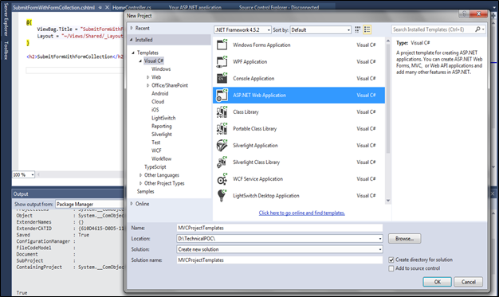
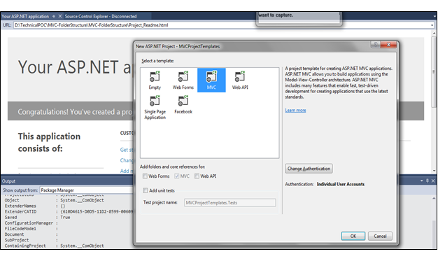

Blog
MVC – Project Templates
Templates in ASP.NET MVC
- While creating new project in MVC by selecting "ASP.NET MVC 4 Web Application" we will get different project templates to select those are Empty template, Basic Template, Internet Application template, Intranet Application template, Mobile Application template and Web API templates.
- We will learn what these templates in asp.net MVC are and which template we need to select to create new project in asp.net MVC? by creating simple asp.net MVC web application.
- For creating new application open visual studio (Here we are using visual studio 2013) and From Start page select File à New à Project
- After that a new dialog will pop up from that select Template a Visual C# a Web. In project select ASP.NET MVC 5 Web Application and enter Name of Project “MVCProjectTemplates” after this just click on OK button like as shown following image


Empty Template in MVC
- The Empty template contains basic empty MVC folder structure with Global.asax file and App_Start folder at top and it will not contain Script folder and Content folder.
- This is just empty configuration from here you all need to create application.
Basic Template in MVC
- The basic template comes with MVC folder structure which is Model Folder, Controller Folder and View folder are empty but View folder has a Shared Folder in which it contains Layouts.cshtml and Error.cshtml.
- The basic template will contain Script folder with default script files and Content folder will have themes and site.css style sheet inside it.
Internet Application Template in MVC
- The Internet Application Template comes with MVC folder structure which contains default HomeController and AccountController with default View for both controller and AccountModels which is required for registration.
- It also comes with Basic Login and registration Mechanism built in it. It is completely ready application for development.
Web API Application Template in MVC
- The Web API Application is yet another version of Internet application template which comes with default Home and Value controller with default View for Home controller and Value controller inherits from ApiController.
- It is used for creating HTTP based RESTful web services. Web API Template is mostly use for passing data to various clients (Mobile and tablet). If you want to create quickly web based Service then Web API is best choice for it.